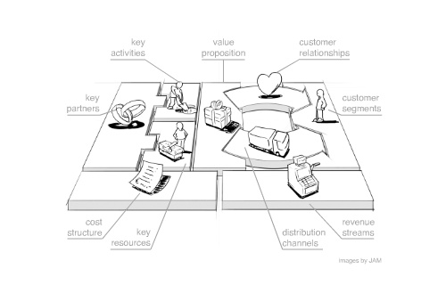
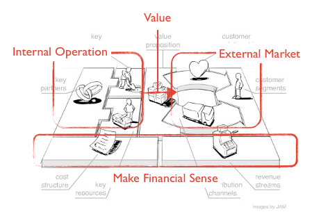
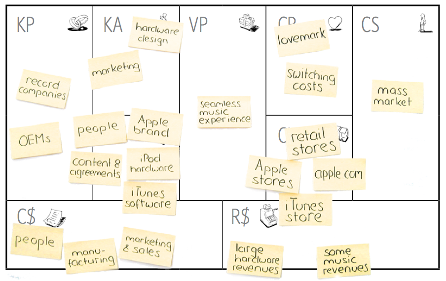
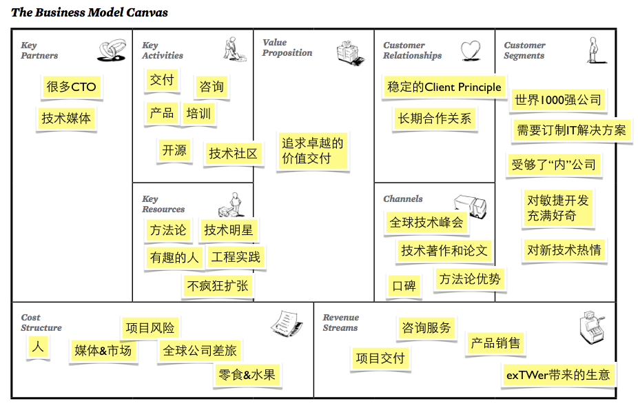

体验设计的基础是对商业模式（现有或者期待被设计）的理解，研究商业模式，在项目启动初期至关重要，它决定着项目资助者是否有足够信心和兴趣正式开始一个项目。
商业模式是定义是：某种盈利性的组织如何创造和传递“需求价值”到消费者，最终从消费者手中将“需求价值”转变为“经济价值”的模式。
商业模式的关键要素
在这个定义中有四个关键的要素，也是一个商业模式建立的四个关键路径：
- 如何发现和定义“价值”?即定义价值──Value Definition
- 如何创造“价值”？即创造价值──Value Creation
- 如何把“价值”交付到消费者？即交付价值──Value Delivery -如何从消费者手中将“价值”转化为利润？即价值对现──Value Capture
这里的Value有不同的双层含义。一代表满足消费者对于某种需求而产生的需求价值；二是代表消费者为此买单而产生的经济价值。二者如同商业机器中相扣相依的齿轮，相互作用的结果是利润的稳步提升。换句话说，一个商业模式的成熟程度，取决于两大价值齿轮合适的比例，以及在二者之间传递价值润滑剂的效率。
过于庞大的需求价值齿轮代表的是过度设计，过于庞大的经济价值齿轮代表的是设计无法满足需要，缺乏稳定的价值转换润滑剂则代表商业模式不能持续稳定运行，此三种情况的最终结果都是商业模式无法产生盈利。
因此，商业模式的研究就在于，如何设计合适的需求价值齿轮（产品设计），如何设计合适的经济价值齿轮（盈利模式设计 - "How to make financial sense"），以及二者之间合适的转化模式（反馈机制，营销策略等）。
Business Model Canvas方法
在商业模式的设计方面，这里介绍的是一种称之为Business Model Canvas（BMC）的方法，创始人是Alex Osterwalder，这是一种在ThoughtWorks的体验设计咨询中被经常使用的方法。Business Model Canvas的精髓是9个商业模式中最重要的模块，他们是：用户、价值、渠道、客户关系、利润流、核心资源、核心活动、核心合作关系、以及成本。参看下面的图：

价值（Value Proposition）是连接内部运营（Internal Operation）到外部市场（External Market）的转化核心。而在内部运营将价值传递到市场的过程中，基于的是对内合理的成本结构（Cost Structure）和对外有吸引力的利润流（Revenue Streams），在经济上共同保证该模式中价值转化的合理性（Make Financial Sense），见下图所示：

理由BMC模型，结合在开篇提到的商业模式的四个核心路径，不难理解，商业模式的分析或设计过程就是弄清楚：
- 如何定义价值：如何定义模式中流动的价值（Value Proposition）？
- 如何创造价值：如何利用组织拥有的核心活动（Key Activity）、核心资源（Key Resource）、以及核心合作（Key Partnership）通过提示内部运营效率不断制造被定义的价值？
- 如何交付价值：如何基于良好的客户关系（Customer Relationship）通过高效的渠道（Distribution Channels）将价值交付到合适的用户（Customer Segments）？
- 如何兑现价值：如何建立对内科学的成本结构（Cost Structure）、对外吸引人的利润流（Revenue Streams）使得价值的交付过程产生实在的利润？
如何使用BMC模型？
BMC模型经常被运用到我们的咨询活动中，每个交付项目开始，我们的咨询师都需要对这个客户的商业模式进行分析。
不同于其他的交付公司，我们的着眼点往往不限于某个产品的设计，在进入实质产品设计前，更多的是在整个商业模式上思考我们该如何定义这种价值？这种价值该如何有效创造？这种价值该如何交付给消费者？如何保证这种价值的交付最后能够兑现？
不难发现，每一个问号背后都存在更多的交付需求，往往一个产品的设计只是整个商业模式上的一环，同时在很多情况下，一个好产品不代表得到好的价值兑现，更多的短板存在于价值之外的8块BMC子模块中，对ThoughtWorks来说，这意味着更多的商业机会。
这里引用Jason Furnell的博客关于BMC模型使用的讲解，我做一些简单的翻译：
- I started by drawing up a blank canvas structure and talking about the individual components and how they related（在白板上画出空白的BMC模板并向大家讲解每一个元素的含义）
- We then began by modeled the existing business model using yellow post-it notes
- We started with customer segments, and got participants to brainstorm on post-it notes and then placed them in the zone (focusing on structuring them into a coherent set is the hard bit)（使用Post-it贴纸让参与者一起头脑风暴并贴在相关的区域里，从“用户”开始）
- Then moved on to Value Proposition – then tried to understand how this value is delivered via channels, and how this changes or informs the kind of relationships they have with their customers（开始思考核心的“价值”，理解价值是如何被通过“渠道”交付给用户，并如何影响和改变“客户关系”）
- From there it was easy to move onto resources, activities and partners supporting delivery of value（开始思考核心的“活动”、“资源”和“合作关系”）
Lastly tried to model the revenue and cost structures – the project was looking to change these aspects so it was hard, but very valuable as a conversation starter.（开始思考“利润流”和“成本结构”，这个部分会比较困难，很多情况下不会想去提这个事情，特别在中国） - We then identified areas that will change as a result of this project (using a different coloured post-it note. Changes to the pricing and product models was one of the primary changes the project was introducing（用不同颜色的Post-it标出那些项目将要影响的部分，比如说改变产品设计、目标用户、或者产品定价等）
- We lastly prioritized these new initiatives, identifying those that would have the greatest impact on achieving the future state goals（找出那些可能在未来产生巨大影响的部分，讨论优先级）
在最后，BMC的产出物都会被利用在更多的咨询实践当中，最终影响项目交付以及未来合作的基础，这也是为什么我们把这个过程叫作“Inception”──我们期待之后的多重梦境。
BMC的例子
Business Model Generation一书中详细介绍了BMC的方法论，其中有一副关于Apple BMC图可以作为参考：

我尝试制作了ThoughtWorks的BMC图，只是一家之言，而且也不是特别正经，不代表官方意见：

参考资料
请参考以下的链接（访问不了就需要翻墙）：
http://www.businessmodelgeneration.com/ - 最完整的关于BMC的资料
http://jasonfurnell.files.wordpress.com/2010/12/businessmodelcanvasfacilitatorcards1.pdf - Jason Furnell制作的BMC卡片，同时可以关注他的博客
http://www.flickr.com/photos/osterwalder/5365416134/ - BMC 创始者Alexander Osterwalder在Flickr上BMC的例子
http://www.businessmodelalchemist.com/ - Business Model Generation一书的官方博客，非常详细的BMC资料
http://www.businessmodelhub.com/ - 其中包括很多Business Model的理论和工具介绍
http://stg.www.thoughtworks.com/xd - TW Experience Design组的子站点，请无视配色